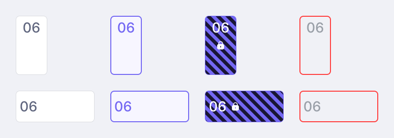

ParkFlux
Designing a flexible parking system that combines ANPR cameras, a management platform and a driver app.
My Contribution
What I owned on this 5-person team:
1
Designed both parts of the product in Figma: the dashboard for parking companies and the app for drivers.
2
Mapped the end-to-end flow from arriving at the gate to leaving the spot, turning three disconnected pieces (hardware, platform, app) into one coherent journey.
3
In 2026 I came back on my own and built one design system for both apps (see below).
Result: the team presented it as the final pitch at DTU X-tech in spring 2024.
WHAT IT LOOKS LIKE
The dashboard and app screens below are the actual UI I designed in Figma.
[ Real-time Monitoring — dashboard on laptop + phone ]
PROJECT OVERVIEW
Context
Rise in number of vehicles, loss of parking spaces and development of smart cities — parking management projected to grow 12.1% by 2030.
ParkZone already runs number-plate cameras (ANPR) and collects the parking data behind them, but the cameras and the data sit in separate systems.
Design challenge: how might we turn ParkZone's hardware and services into one coherent experience for drivers and parking operators?
SOLUTION OVERVIEW
[ Solution overview diagram: ANPR cameras, parking spot user, and app with payment ]
Smart pillar
ANPR cameras, motion detection and LED feedback to track each parking spot
Owner dashboard → my focus
Web platform to see occupancy, set rules and export data
Driver app → my focus
Mobile app to guide drivers to a spot and handle access and payment
Research & insights
The team interviewed ParkZone's business lead to understand their current solution and where they see opportunities.
Current User Flow

The team mapped the current end-to-end journey for a driver and the parking company.
Pain points:
Drivers struggle to find a free EV charging spot and remember where they parked
Guards manually check illegal parking and issue fines – this is slow and inconsistent
Data from ANPR cameras is not fully used to improve operations
These maps helped the team identify where a digital platform could improve the experience for both sides.
Based on the journey and system map, the team defined the core functions for the ParkFlux app and platform:
Real-time monitoring & feedback
Booking and reservations
Space and EV-charging management
ANPR-based history, reporting, and user management
This became the backbone for the dashboard and mobile flows.
I started with low-fidelity dashboard layouts to explore how to:
Visualise space reservation and charger occupancy
Keep the side navigation simple for different modules (data, history, space management, user management)

DASHBOARD & APP DESIGN
[ Final dashboard designs — three views ]
[ Illegal parking alert — license plate detection ]
[ Reservation information tooltip ]
[ Parking space reservation management screen ]
Final dashboard highlights:
A map-like grid for a quick overview of free, occupied, and reserved spots
Separate cards for EV chargers, showing status and power use
A reporting view that aggregates ANPR data (entries, exits, fines) for business decisions
Mobile App Design
[ Mobile app design screens — part 1 ]
[ Mobile app design screens — part 2 ]
[ Driver app mobile screens — search, pick slot, book, confirm ]
The driver app I designed lets you:
Reserve a charger through the company or a private owner
Get guided back to your car after charging
2026 REVISIT · DESIGN SYSTEM
One system for two apps
I designed both ParkFlux apps in 2024. In 2026 I came back on my own and built one design system for both. This was not part of the 2024 team project.
1. The problem
One dashboard screen used 30 different colours. The same purple had 6 versions.

2. Colours with names
I gave every colour a name. Some names say the colour, like purple-500. Others say the job, like "main text" or "error". Now every screen uses the same colour for the same job.

3. The parking slot: one part, two apps
Both apps show parking slots, so I built the slot once. It has four states: available, selected, reserved and unavailable. The dashboard shows it upright. The driver app shows it flat.

4. Before and after
I rebuilt one screen from each app with these colours and parts. The dashboard screen went from 30 colours to 11. The driver app screen went from 21 to 8.


REFLECTION
What I learned
How to connect business models, hardware constraints and UX in one concept
How to design for two user groups at the same time: drivers and parking operators
How to communicate a complex system clearly in a short pitch and a visual dashboard
How a shared system keeps two apps consistent (2026 revisit)
OTHER WORK
[ Other projects — Job Search Tracker and Designing for Less Stress ]